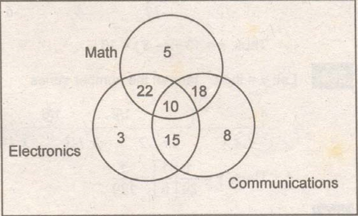

Venn diagram is a rectangle (the universal set) that includes circles depicting the subsets. This diagram is named after the English logician John Venn (1834-1923) in 1880.
Below is a typical problem that is given in the engineering licensure examinations.
A survey was conducted in a graduating ECE students in a certain university on which board subject they like best. The result is tabulated as follows:
| Mathematics | 55 | Math & Electronics | 32 |
| Electronics | 50 | Math & Communications | 28 |
| Communications | 51 | Electronics & Comm | 25 |
| All three subjects | 10 |
How many were there in the graduating class?
Solution: Use Venn diagram:
$$\eqalign{
& N = 5 + 22 + 10 + 18 + 3 + 15 + 8 \cr
& N = 81\text{ students} \cr} $$

Fundamental principle of counting:
"if a thing can be done in m different ways and another thing can be done in n different ways, then the two things can be done in m times n different ways."
$$N=m \cdot n$$
Permutation: (Arrangement with specific order)
"The number of permutations of n different things taken r at a time is
$$\eqalign{
& _n{P_r} = {{n!} \over {(n - r)!}} \cr
& \text{if taken all}\ \ \ \ \ \ {_n}{P_r} = n! \cr} $$
Combination: (Arrangement regardless of the order)
"The number of combinations of n different things taken r at a time is
$$\eqalign{
& _n{C_r} = {{n!} \over {(n - r)!r!}} \cr
& \text{if taken all}\ \ \ \ \ \ {_n}{C_r} = 1 \cr} $$
Relation between permutation and combination:
$$_n{C_r} = {{_n{P_r}} \over {r!}}$$
The probability (chance) of occurrence of a certain event in the following topics are based on the idea that all possible outcomes are equally likely to occur. This means that if a die is thrown once, the probability of getting a six is 1/6. The same probability with all the other numbers, i.e. for 1 is 1/6, for 2 is 1/6 and so on.
Probability that an event E will happen:
$${P_E} = {S \over T}$$
where:
S = number of successful outcomes
T = number of outcomes
Probability that it is not E:
$${P_{notE}} = 1 - {P_E}$$
Mutually exclusive event:
$${P_{\text{E or F}}} = {P_E} + {P_F}$$
Conditional and Independent probability:
$${P_{\text{E & F}}} = {P_E} \times {P_F}$$
Binomial or repeated trial probability:
$$P{ = _n}{C_r}{p^r}{q^{n - r}}$$
where:
p = probability of success
q = probability of failure = 1 - p
n = number of trials
r = number of successful trials
CARDS. When dealing with playing cards, pack of cards or deck of cards is understood to be 52 cards.
The playing cards were used to describe a calendar year. The 52 cards represent the 52 weeks in a year. The 4 figures (Heart, Spade, Club and Diamond) represent the 4 seasons of the year and the 12 persons (Kings, Queens, Jacks) are the 12 months of the year.
DICES. Dices were first used by the Chinese. The sum of the opposite faces of a die is always equal to 7. And the sum of all the vertical faces of a die, no matter how it rolls is always equal to 14.